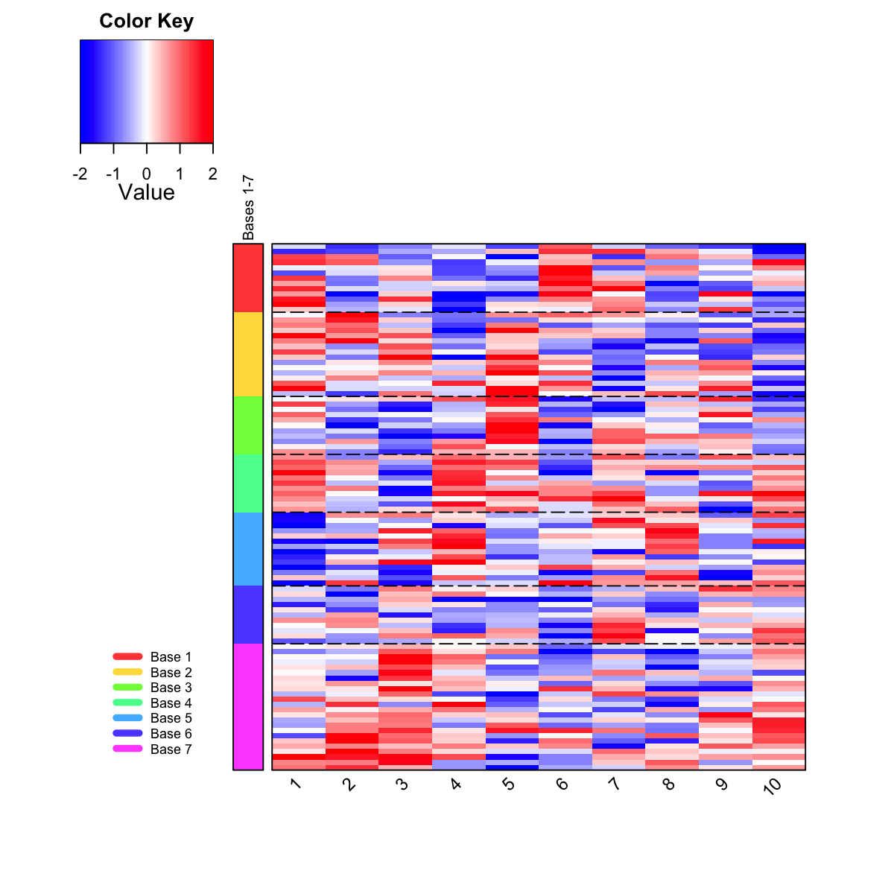

visDmatHeatmap is supposed to visualise gene
clusters/bases partitioned from a supra-hexagonal grid
using heatmap
visDmatHeatmap(sMap, data, sBase, base.color = "rainbow", base.separated.arg = NULL,
base.legend.location = c("none", "bottomleft", "bottomright", "bottom", "left",
"topleft", "top", "topright", "right", "center"), reorderRow = c("none",
"hclust", "svd"), keep.data = F, ...)
a data frame with following components:
ID: ID for data. It inherits the rownames of
data (if exists). Otherwise, it is sequential integer
values starting with 1 and ending with dlen, the total
number of rows of the input data
Hexagon_index: the index for best-matching
hexagons Cluster_base: optional, it is only
appended when sBase is given. It stores the cluster
memberships/bases data: optional, it is only
appended when keep.data is true A list of parameters in "base.separated.arg":
# 1) generate an iid normal random matrix of 100x10 data <- matrix( rnorm(100*10,mean=0,sd=1), nrow=100, ncol=10) # 2) get trained using by default setup sMap <- sPipeline(data=data)Start at 2014-04-08 10:31:43 First, define topology of a map grid... Second, initialise the codebook matrix given a topology and input data... Third, get training at the rough stage... Fourth, get training at the finetune stage... Next, identify the best-matching hexagon/rectangle for the input data... Finally, append the response data (hits and mqe) into the sMap object... Below are the summaries of the training results: dimension of input data: 100x10 xy-dimension of map grid: xdim=9, ydim=9 grid lattice: hexa grid shape: suprahex dimension of grid coord: 61x2 initialisation method: linear dimension of codebook matrix: 61x10 mean quantization error: 4.85941466034151 Below are the details of trainology: training algorithm: batch alpha type: invert training neighborhood kernel: gaussian trainlength (x input data length): 7 at rough stage; 25 at finetune stage radius (at rough stage): from 3 to 1 radius (at finetune stage): from 1 to 1 End at 2014-04-08 10:31:43 Runtime in total is: 0 secs# 3) partition the grid map into clusters using region-growing algorithm sBase <- sDmatCluster(sMap=sMap, which_neigh=1, distMeasure="median", clusterLinkage="average") # 4) heatmap visualisation output <- visDmatHeatmap(sMap, data, sBase, base.legend.location="bottomleft", labRow=NA)
sDmatCluster, visHeatmapAdv
Fang H, Gough J. (2014) supraHex: an R/Bioconductor package for tabular omics data analysis using a supra-hexagonal map. Biochemical and Biophysical Research Communications, 443(1), 285-289. http://dx.doi.org/10.1016/j.bbrc.2013.11.103, PMID: 24309102
){kind=link}